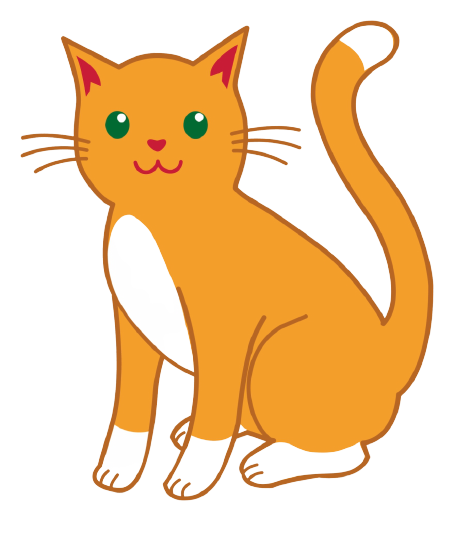
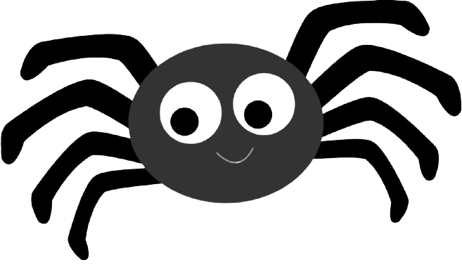

<link href="https://unpkg.com/tailwindcss@^2/dist/tailwind.min.css" rel="stylesheet">
<link rel="stylesheet" href="https://cdnjs.cloudflare.com/ajax/libs/animate.css/4.1.1/animate.min.css"/>

<meta name="viewport" content="width=device-width, initial-scale=1.0">

<header class="bg-gray-800 text-gray-100 overflow-x-hidden">
<nav class="pt-10">
    <ul class="flex justify-between text-xl pt-8 py-8 px-8 sm:px-48">
      <li>
        <a href="index.html" class = "font-semibold text-xl">Home</a>
      </li>
      <li>
        <a href="subjects.html" class = "font-semibold text-xl text-yellow-400">Subjects 📚</a>
      </li>
    </ul>
  </nav>

</header>


<section class="justify-center bg-gray-800 text-gray-100 overflow-x-hidden">

      <div class="flex flex-col items-center leading-7 text-center text-gray-900">
        <h3 class="box-border text-xl leading-tight tracking-tight text-white sm:text-2xl md:text-3xl py-6">Wellness</h3>
    </div>
    
    <div class="grid lg:grid-cols-3 flex flex-wrap justify-center content-center content-around mx-10 content-between overflow-x-hidden">

        <div class="rounded-lg shadow-xl relative mx-10 my-24 px-8 pt-16 pb-16 bg-red-100 text-white" style="max-width:400px;">
        <div class="">
            
        </div>

            <h3 class="text-3xl font-semibold text-black leading-tight">Dog</h3> <br>
            <h2 class = "text-black">There's a reason we call them man's best friend. Studies have shown that even small interactions with dogs cause the human brain to produce oxytocin, a hormone linked to relaxation, trust, and happiness.</h2><br><br>
            <a href="https://console.echoar.xyz/query?key=white-rain-2508&file=a4a93f63-b23f-4c27-a1ad-a733f80668ed.usdz" class="py-3 px-6 rounded shadow hover:shadow-lg text-white text-lg bg-gray-900 hover:bg-black focus:outline-none transition-all duration-300 ease-in-out">Bring to Life</a>
        </div>

        <div class="rounded-lg shadow-xl overflow-hidden relative mx-10 my-24 px-8 pt-16 pb-16 bg-red-100 text-white" style="max-width:400px;">
            <div class="">
                
            </div>
    
                <h3 class="text-3xl font-semibold text-black leading-tight">Cat</h3> <br>
                <h2 class = "text-black">Little did we know, cats help our mental health just by being themselves. Their ability to reduce stress, offer companionship, heal with purrs, and offer their services as therapy animals makes them the ideal champions for mental health.</h2><br><br>
                <a href="https://console.echoar.xyz/query?key=white-rain-2508&file=6d4a48a9-c3e3-4349-b78d-5376ae77ff45.usdz" class="py-3 px-6 rounded shadow hover:shadow-lg text-white text-lg bg-gray-900 hover:bg-black focus:outline-none transition-all duration-300 ease-in-out">Bring to Life</a>
            </div>

            <div class="rounded-lg shadow-xl overflow-hidden relative mx-10 my-24 px-8 pt-16 pb-16 bg-red-100 text-white" style="max-width:400px;">
                <div class="">
                    
                </div>
        
                    <h3 class="text-3xl font-semibold text-black leading-tight">Arachnophobia</h3> <br>
                    <h2 class = "text-black">Simple phobias can be treated through gradual exposure to the object, animal, place or situation that causes fear and anxiety. This is known as desensitisation or self-exposure therapy.</h2><br><br>
                    <a href="https://console.echoar.xyz/query?key=white-rain-2508&file=fa457714-e966-4c70-accd-25c6b62126d0.usdz" class="py-3 px-6 rounded shadow hover:shadow-lg text-white text-lg bg-gray-900 hover:bg-black focus:outline-none transition-all duration-300 ease-in-out">Bring to Life</a>
                </div>

    </div>
</section>

